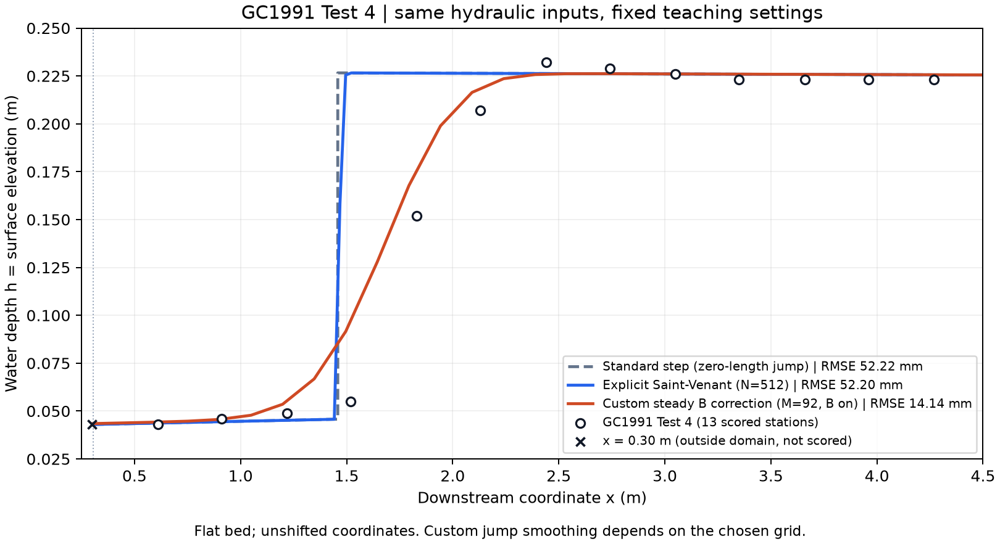

Lab 01 / Horizontal channel
GC1991 水躍實驗室
一個實驗、三種方法。用同一組水平矩形渠道 Test 4 資料，理解水理假設與數值方法如何影響計算水面。
第一次使用，從這裡開始
-
下載 GC1991 教材 ZIP，解壓縮後將
gc1991-lab放到英文且不含空白的路徑，例如~/gc1991-lab。 - 依平台完成 Windows／WSL 或 macOS 安裝，在教材資料夾執行：
cd ~/gc1991-lab
bash setup.sh
bash start_lab.sh
用瀏覽器開啟終端機提供的本機網址，打開 student_lab.ipynb，選擇 GC1991 Lab 核心，從上到下執行。
網頁提供教材與說明；實際計算在你的電腦上執行。日後上課只需啟動 bash start_lab.sh。
這次比較哪些方法？
| 方法 | 學習重點 | 參考 RMSE |
|---|---|---|
| Standard-step | 能量方程、急／緩流分支與比力匹配 | 52.22 mm |
| Saint-Venant | 深度平均守恆與水深突變捕捉 | 52.20 mm |
| Custom M92 | 穩態 B 修正、數值耗散與水面上升 | 14.14 mm |
三者共用水理條件，各自保留已確認的網格、時間步與平均時段。RMSE 採計算區內的 13 個原始量測座標，不平移剖面。

先看懂數字，再解釋曲線
本案例底床為水平、z = 0，水深等於水面高程。上游水深為 0.043 m、流速為 2.737 m/s；渠道寬度為 0.46 m，下游邊界水深為 0.222 m。
Manning n = 0.008 與出口 x = 14 m 是教材明列的採用假設，並非都已確認為原論文的個別設定。完整定義見方程與方法。
為什麼自訂模式的 RMSE 較小，仍須保留限制？
M92 的上升寬度與網格及數值耗散有關，尚不是收斂的物理預測。較接近此組實驗水面，不代表滾流、紊流或水躍內部流速已通過驗證。相同網格 B off／on 的 RMSE 約為 14.47／14.14 mm，不能將全部差異歸因於 B 修正。
「reproduction passed」代表什麼？
代表這台電腦重現教材已封存的數值結果。它與對實驗的誤差、物理有效性是不同的檢查。請保留兩種比較的原有定義。
完成一次課堂作業
- 交付三種方法的比較圖、RMSE 表及各方法的設定。
- 用共軛水深與比力解釋 standard-step 的突跳。
- 說明較接近實驗水面，為何不足以驗證內部流速。
- 調整 Python 圖的範圍，觀察水躍區與下游緩流段。
第一版不要求修改 C 核心、加密網格或調整 Manning n 來擬合。每次執行的輸入、曲線與紀錄保存在新的 runs/ 子資料夾。
實驗資料來源
Gharangik, A. M. & Chaudhry, M. H. (1991). Numerical simulation of hydraulic jump. Journal of Hydraulic Engineering, 117(9), 1195–1211. 論文 DOI ↗
量測取自 Test 4 Table 2 的既有核對抄錄。資料來源、Basilisk 原始碼與授權資訊見來源說明。